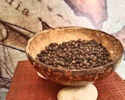

Budaya Aceh
Seni dan tradisi Aceh yang kaya, dari tari Saman hingga ukiran meunasah yang memukau.

Kekayaan Rempah
Tanah Aceh menghasilkan rempah-rempah terbaik yang menjadi dasar cita rasa kuliner lokal.

Tradisi Kuliner
Resep masakan Aceh diwariskan turun-temurun, menjaga keaslian rasa di setiap generasi.